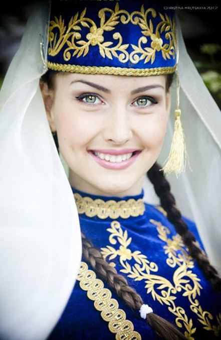

Salut, cher voyageur, chère voyageuse. C'est Tiffany. J'espère que vous allez bien. Je suis très heureuse de vous retrouver dans ce nouvel article.
Aujourd'hui, je voudrais vous parler des femmes russes.
Tout d'abord, parce qu'il y a deux réactions quand je dis que je vis en Russie. Celle des hommes : « Est-ce que c'est vrai que les femmes russes sont belles ? ». Puis vient celle des femmes : « Est-ce que c'est vrai qu'il faut se "méfier" des femmes russes ? J'ai vu des reportages et apparemment... elles se cherchent "à tout prix" un mari ? » On m'a même dit une fois : « Tiffany, fais attention à ton mari ! »
Je vous écris cet article, non pas pour vous dire qui a tort et qui a raison. Je vous écris pour vous donner mon ressenti puisque ça fait deux ans que je vis parmi les russes. C'est mon ressenti d'après mon vécu et à cet instant précis de ma vie. Ce n'est qu'un regard et non pas, l'absolue vérité. Je suis certaine que vous comprenez.
Vous savez, j’ai très envie de vous écrire cet article parce qu'il y a quelque temps, un de mes élèves russes m'a montrée une superbe vidéo. Une vidéo qui m'a fait éclater de rire et qui d'ailleurs, a fait éclater de rire beaucoup de russes. Cette vidéo a fait tout simplement un carton. Pour te dire, à quel point ça a fait un carton, c'est qu’au moment où cette vidéo est sortie sur internet, il y avait une exposition de Van Gogh à Moscou. Et, j'ai entendu dire que les organisateurs avaient décidé, suite à la vidéo, de faire une réduction de 50 % à toutes les femmes portant des chaussures à très hauts talons.
Je suis sûre que vous vous dites : Mais pourquoi, pourquoi ? De quoi parle cette vidéo ?
Tout d'abord, vous pouvez aller voir la vidéo sur youtube, en tapant : Leningrad - Exponat.
La vidéo commence et vous pouvez voir deux jeunes russes se parler via skype. Elle raconte qu'elle n'aime pas l'argent, qu'elle préfère vivre dans une petite maison et peindre. Alors, l'homme, Sergueï, lui demande ce qu'elle peint. Elle lui répond que c'est difficile d'en parler à quelqu'un qu'elle n'a jamais rencontré. C'est pourquoi, Sergueï lui propose un premier rendez-vous : aller à une exposition ensemble. Il lui dit qu'il viendra la chercher à 18h et lui demande : « Ça te convient ? ». La jeune femme à cette demande se rêve immédiatement, devant un prêtre et se mariant avec le beau Sergueï. Puis quand vient le temps de répondre à Sergueï, elle fait semblant de réfléchir (Ah les femmes !) et accepte.
Alors déjà, la jeune femme qui se voit se marier avant le premier rendez-vous, c'est très drôle. Mais ensuite, c'est encore plus drôle, on la voit se préparer tout le long de la chanson. Evidemment… tout ne se passera pas comme prévu… Le plus intéressant, c'est que vous la voyez se transformer grâce à de nombreux artifices.
C'est absolument drôle et c'est aussi très intéressant. Cette vidéo me permet de vous parler des femmes russes, de ce que j'en ai vu, entendu aussi. Est-ce que vous voulez en savoir plus ?
Tout d'abord, est-ce que les femmes russes sont belles ?
Pour vous répondre, je vais vous parler d'une légende russe. Il est dit qu'en Russie, les hommes ont épousé les sorcières alors que les européens, eux, les ont tuées. C'est ce qui expliquerait pourquoi les femmes russes sont plus belles que les européennes. En effet, les gênes de beauté étaient beaucoup plus présents chez les sorcières. Qu'en pensez-vous ? De mon côté, j'ai tout simplement adoré cette légende. Et, effectivement, depuis deux ans, je remarque, tout autour de moi, des femmes vraiment très belles. Elles sont grandes, sveltes, blondes, les yeux bleus et bien qu'elles soient sveltes, elles ont de belles formes.
Je peux vous dire que moi qui suis toute petite... cela me fait bizarre parfois ahah !
Peut-être que vous vous dites : « Ok, les femmes russes sont belles mais… et les artifices alors ? »
Ahah ! C'est ce qui m'a fait le plus rire dans le clip, c'est tout ce temps, tout ce matériel que la jeune femme utilise. Et cela me fait d'autant plus rire parce que c'est ce qui m'a le plus surprise en Russie : Toutes ces femmes avec des talons si hauts, des jupes qui peuvent être si courtes et si moulantes. Et tout ce maquillage, ce vernis aussi !
Et en parlant de maquillage, ce n'est pas rare de les voir au bureau, dans la rue, dans les couloirs du métro, être en train de se remaquiller : rouge à lèvres, fond de teint. Comme ça, aux yeux de tout le monde.
Je ne sais pas pour vous, mais moi cela me surprend à chaque fois. Et au fond de moi, je suis un peu jalouse. Car c'est évident, si on veut être bien maquillée, il faut faire des retouches alors pourquoi s'en empêcher parce que des gens nous regardent ? Pour les femmes russes en tout cas, ce n'est pas un problème !
Je les trouve aussi hyper courageuses. Elles affirment leur féminité et n'hésite pas à y passer du temps. Disons leur bravo pour leurs efforts plutôt que de tout rejeter, non ?
J'imagine que vous avez une question : « Mais pourquoi font-elle ça ? Pourquoi veulent-être les plus belles ? »
Ah ça, c'est une question que je me suis posée dès que j'ai mis un pied en Russie, et que je me pose encore régulièrement. Pourquoi marcher avec des talons de 20 centimètres ? Pourquoi se re-maquiller pendant que vous parlez avec des collègues ? Pourquoi remettre du rouge à lèvres quand vous vous baladez dans la rue avec un homme ?
Certains diront que c'est parce qu'elles cherchent un mari à tout prix. Vous vous souvenez des on-dit ? Je pense qu'il y a un peu de ça : de la compétition. Savez-vous qu'en Russie, d'après les statistiques, il y a plus de femmes que d'hommes. Alors, bien sûr, ça entraine de la compétition.
Mais est-ce vraiment que de la compétition ?
J'en doute ! Je pense que c'est aussi par amour des belles choses et des beaux sentiments. Je trouve les femmes russes très romantiques, vraiment !
Le regard de la société et parfois, la nécessité de se marier peut exacerber cette « envie » de mariage. Mais pas que… Il y a aussi un véritable rêve de se marier, d'un grand et beau mariage avec le prince charmant.
Quand je parle des attentes de la famille, c'est vrai. J'ai connu plusieurs jeunes femmes et notamment une femme russe de 27 ans. Elle m'a dit : Tu sais Tiffany, ma mère m'a dit que je devais me dépêcher de me marier. Il y a des femmes qui sont plus jeunes que moi maintenant."
Quand je parle de « nécessité » de se marier, c'est vrai aussi. Une autre jeune femme m'a racontée : « En Russie, c'est obligatoire de se marier quand tu fais des enfants. Si tu fais des enfants avec un homme qui n'est pas ton mari, s'il part, il n'a aucunes obligations légales envers l'enfant. »
Et, quand je parle de ce véritable rêve de faire un grand et beau mariage, c'est vrai aussi. Tout d'abord, si vous vous promenez en Russie, surtout aux beaux jours, vous allez voir des limousines aux alentours des plus beaux parcs. Et dans les parcs, vous dévorerez des yeux les mariés. Ils seront en train de poser devant un vrai photographe. (Oui, en Russie, les photos, et notamment celles des mariages, c'est sacré !!!)
Je pense aussi à ce film fou : Горько ! Je n’ai pas réussi à le trouver en français, dommage. C’est un film russe à propos d’un mariage. C’est beau, déjanté et dur à la fois. Il y a notamment dans le film, une scène très drôle. Les enterrements de vie de garçon et de jeune fille. L’homme, lui, est dans une boite de strip-tease avec ses amis, à boire beaucoup d’alcool… Et la femme, elle, est chez elle à chanter des chansons d’amour avec ses amies… Bien sûr, c’est caricatural mais… il y a une petite part de vérité là-dedans.
Et évidemment, on peut extrapoler cela aux femmes françaises et celles du monde entier. Le mariage fait rêver. Et être aussi belle qu'une princesse aussi.
Je pense qu'il n’y a pas besoin d’aller en Russie pour trouver des femmes qui veulent se marier. En France, j’en connais tout plein…
Voilà, cher voyageur, chère voyageuse, j’espère que ces quelques mots sur les femmes russes et le mariage vous ont plu et qu’ils vous ont fait voyager de chez vous.
Je vous dis à très bientôt et, en attendant, je vous encourage à rester curieux du monde qui vous entoure.
Partager cette page